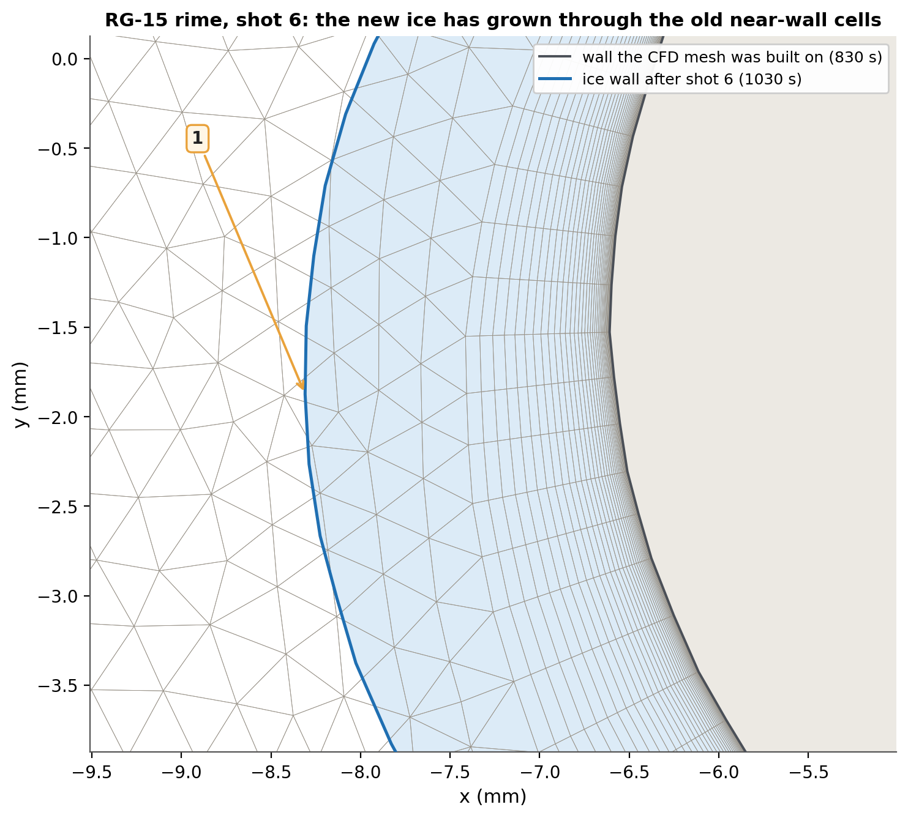
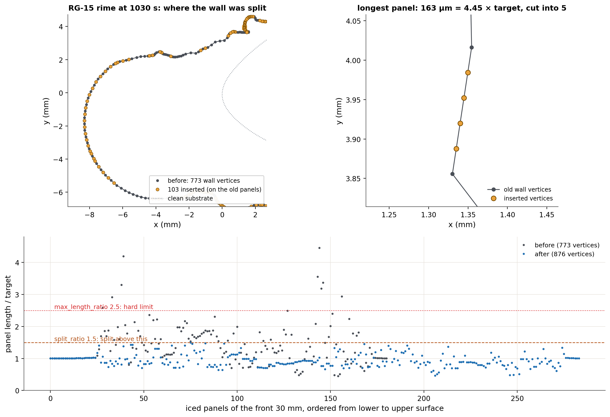
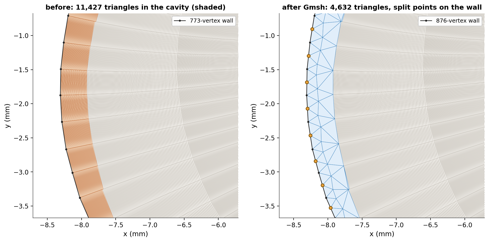
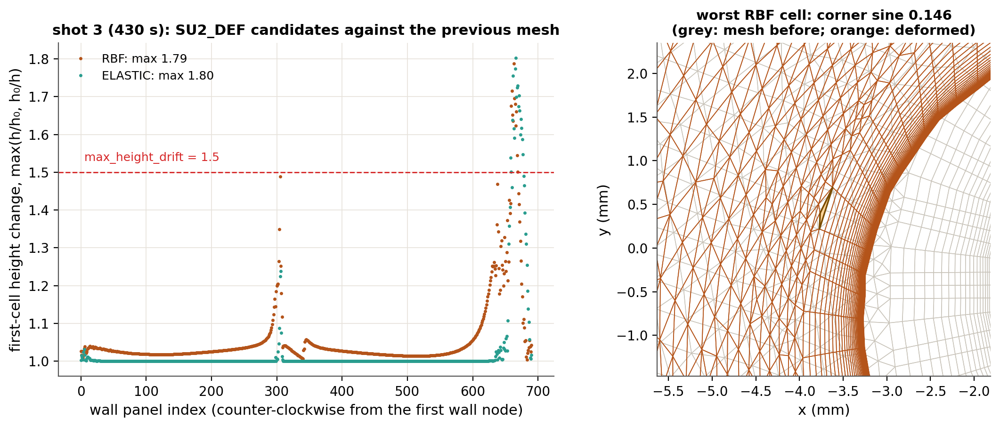
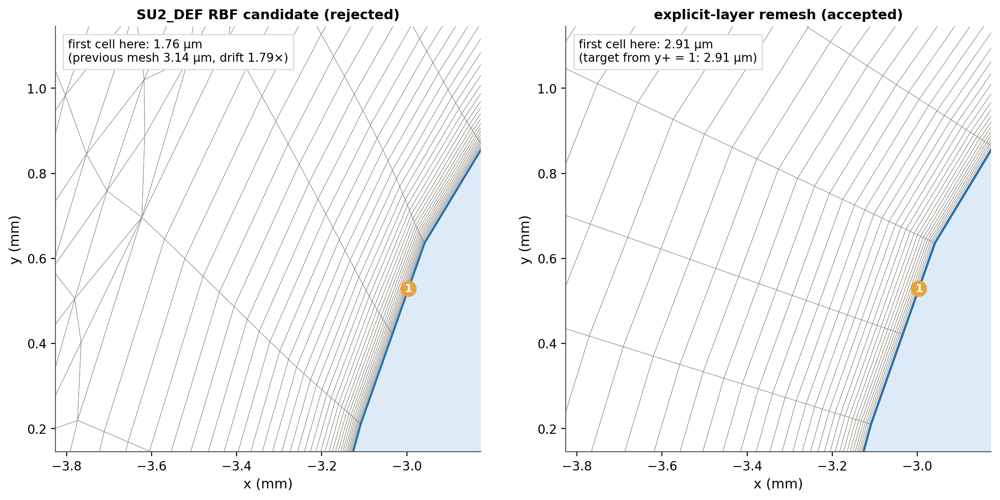
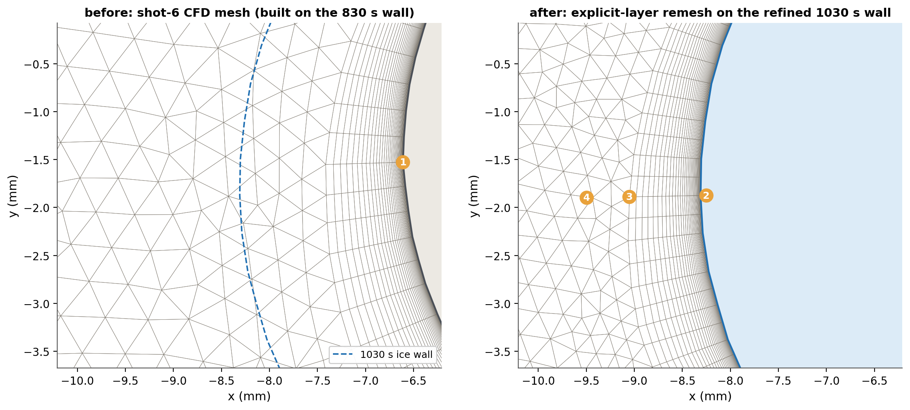
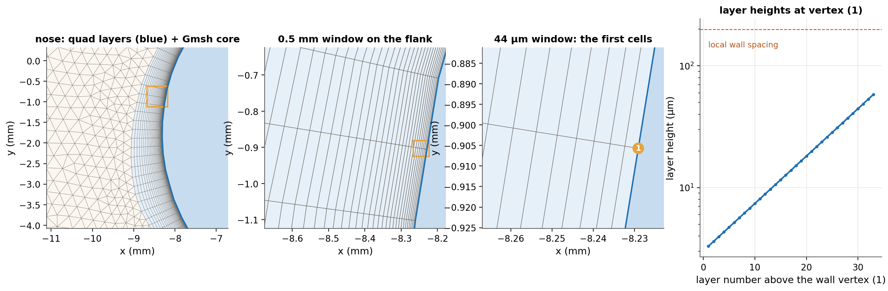
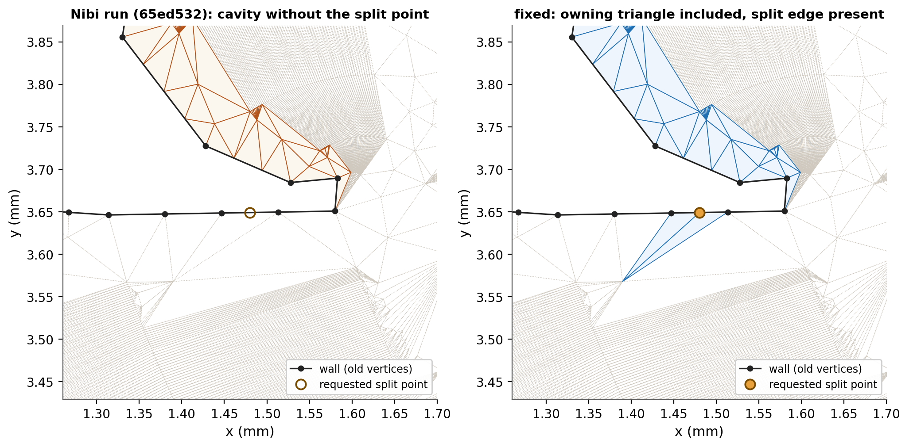

Refining, deforming, remeshing
After each shot the ice wall has moved by up to millimetres. Before the next CFD solution the solver must give the wall enough points, then fit the air mesh to the new wall, either by bending the old mesh or by building a new one, and finally carry the old flow solution across. This page shows each of these operations on real meshes from the RG-15 campaigns.
- Why the mesh must follow the ice Basic
- How mesh quality is measured Basic
- Wall refinement Intermediate
- Re-triangulating the ice under the split panels Intermediate
- Deforming the fluid mesh with SU2_DEF Intermediate
- Remeshing with explicit wall layers Intermediate
- Deform or remesh? Intermediate
- Carrying the flow across: warm starts Advanced
- Lessons from the seven-shot campaign Advanced
- Failure policy and known limits Advanced
- Case study: the shot-6 cavity fix Advanced
- Where it lives Advanced
Why the mesh must follow the ice Basic
The flow solver SU2 (see Airflow with SU2) solves on a fluid mesh: a set of small cells covering the air around the airfoil. Next to the wall the cells are very thin, stacked layers, because the velocity changes from zero at the wall to nearly free-stream speed within a fraction of a millimetre (the boundary layer). Heat transfer and shear, which drive freezing, are computed from these first few cells.
When ice grows, the wall moves into the air. Figure 1 shows how far: by the end of shot 6 of the RG-15 rime campaign (runs/nibi/ms_rg15c) the ice tip lay 1.73 mm upstream of the wall that the shot-6 mesh was built on. The whole near-wall layer stack of that mesh, and a band of core triangles, now lies inside the ice.

package/results/shot_06/flow/mesh.su2, 437,273 cells) built on the 830 s wall (grey line and grey fill), with the ice wall after shot 6 at 1030 s (blue). Call-out 1: the new ice tip, 1.73 mm from the nearest old wall vertex. The fine quadrilateral layers that resolve the boundary layer are all inside the new ice; the CFD of shot 7 needs a mesh whose first cells sit on the blue line.So between shots the solver runs a short pipeline, implemented for the rime path in nodal_coupling._adapt_meshes and for the glaze campaign in glaze_campaign.py (documented in docs/MESH_ADAPTATION.md):
- Refine the wall where panels have become too long, without changing its shape.
- Update the fluid mesh: deform the old mesh if that keeps it good enough, otherwise remesh.
- Map the old flow solution onto the new mesh as a starting guess for the next CFD run.
The air mesh is a tailored suit for the airfoil. When ice grows, the suit no longer fits. The solver first adds seams to the wall where it has stretched, then either stretches the old suit over the new shape or sews a new one, and checks the fit before the flow is solved again.
How mesh quality is measured Basic
Every mesh the solver produces or accepts goes through Mesh.require_valid() in icing/mesh.py. The measures are simple geometry, computed per cell by Mesh.cell_metrics():
icing/mesh.py and icing/fluid_remesh.py.- Signed area. A cell whose vertices are not counter-clockwise has negative area: it is inverted. Any such cell (or a zero corner) is counted as invalid and the mesh is rejected.
- Corner sine, also called the scaled Jacobian: the cross product of two adjacent edges divided by their lengths, i.e. the sine of the corner angle, minimised over the cell's corners. The hard floor is
MIN_CORNER_SINE = 0.10(a corner of about 5.7°). For a deformed mesh the ratio to the same cell before deformation must also stay aboveMIN_CORNER_RATIO = 0.25and the area ratio above 0.05: "The per-cell ratio catches a sudden loss even if a different cell sets the minimum." - Edge aspect ratio: longest edge over shortest edge of a cell. Near-wall cells are deliberately long and thin; the number is reported, not limited.
- First-cell height \(h_1\) of each wall panel: the area of the cell on that panel divided by the panel length (twice that for a triangle), in
fluid_remesh.wall_layer_metrics(). - y⁺, the first-cell height in "wall units": \(y^+ = \rho\,u_\tau h_1/\mu\), with the friction velocity \(u_\tau = \sqrt{\tau_w/\rho}\) from the latest wall shear stress \(\tau_w\), density \(\rho\) and dynamic viscosity \(\mu\) (
mesh_adaptation.predicted_yplus). The SST turbulence model used here wants \(y^+\) of about 1. - Topology (
Mesh.topology()): every interior edge is shared by exactly two cells in opposite directions, every boundary edge carries exactly one marker, and no marked edge is interior. Positive cell areas alone cannot detect duplicate cells or hanging edges.
areas[indices] = .5 * cross(points - points[:, :1], edges).sum(axis=1)
corners = cross(edges, np.roll(edges, -1, axis=1))
scales = np.maximum(lengths * np.roll(lengths, -1, axis=1), 1e-300)
jac[indices] = (corners / scales).min(axis=1) # worst corner sine of the cell
aspect[indices] = lengths.max(axis=1) / np.maximum(lengths.min(axis=1), 1e-300)
The ice body has its own mesh, the triangular conduction mesh of Heat inside the ice. Its quality matters for a different reason: for linear triangles the conductance of an interior edge is \((k/2)(\cot a + \cot b)\), where \(a\) and \(b\) are the two angles facing the edge, and it turns negative when \(a+b > 180^\circ\). icing/ice_mesh_quality.py therefore keeps the ice "locally Delaunay" after every geometry step by edge flips and removal of buried vertices (restore_ice_shape), conserving water mass and enthalpy; ice_quality() reports the largest angle and the number of non-Delaunay edges.
Wall refinement Intermediate
As the previous page showed, a wall that keeps its vertices turns into facets. Refinement adds vertices. It has two parts: deciding how long each panel should be, and splitting the ones that are too long.
The target spacing
wall_resolution.target_spacing() gives every panel a target length, the minimum of two limits:
- Design spacing: the panel length of the clean wall at the nearest substrate point, times
design_factor(1.0). This keeps the mesh designer's intent, e.g. fine panels at the leading edge. - Curvature limit: at most
max_turn_deg(5°) of turning per panel, using a curvature smoothed overcurvature_window(4) design spacings, so that a true corner gets a finite density. Vertices turning more thanfeature_angle_deg(60°), such as a blunt trailing edge, are treated as features, not curvature.
The result is then graded: neighbouring targets may differ by at most a growth rate of grading − 1 = 0.2 per unit distance (grade()). The curvature limit is applied only on iced panels; "The clean substrate keeps the designer's spacing; only ice is adapted."
Exact splitting
Any panel longer than split_ratio (1.5) × its target is cut into equal pieces, repeated up to six passes (adapt_surface). The new vertices lie exactly on the old panels, so the polygon, its enclosed area and all inventories are unchanged:
pieces = np.where(lengths > split_ratio*panel_target, np.ceil(lengths/panel_target), 1).astype(int)
for i, count in enumerate(pieces):
a = surface.points[i]; edge = surface.edges[i]
for k in range(count):
# Exact endpoints: the first point is the original vertex itself.
points.append(a if k == 0 else a + (k/count)*edge)
parent.append(i); start.append(k/count); stop.append((k+1)/count)
The parent, start and stop arrays remember which old panel each new panel came from and which fraction of it, so every panel quantity can be moved across conservatively (Refinement.panel_operator), and outlet panels and panel lineage follow the wall. Panels under ice thinner than THIN_ICE_FRACTION = 0.25 × target are excluded ("it cannot have stretched the panel, and a cavity under it would be a sliver").

runs/nibi/ms_rg15c/diagnosis/fixed_replay_wsl). Top left: the 773 old vertices (dark) and the 103 inserted ones (orange), 773 → 876 vertices on 73 split panels. Top right: the longest eligible panel, 163 µm long and 4.45 × its 37 µm target, cut into 5 equal pieces. Bottom: panel length over target for the iced panels of the front 30 mm, before and after; after refinement the largest is 1.49, below the split ratio. Computed by _build/fig_mesh.py with wall_resolution.target_spacing and the campaign's settings.Re-triangulating the ice under the split panels Intermediate
The wall is also the outer boundary of the ice conduction mesh. A new wall vertex on an old panel would be a "hanging node" for the triangle that owns that panel. So the solid mesh must change too, but as little as possible. wall_refinement.refine_nodal_wall() does this:
- Select a shallow cavity (
select_cavity): the ice triangles withindepth_factor(2) × the new panel length of the split panels, plus (since 2026-11-17) the triangle owning every split panel; pinched corners are closed. - Re-triangulate it with Gmsh (
remesh_cavity): every vertex on the cavity boundary and every interior material interface stays fixed, and the new wall vertices are added on the split edges. Everything outside the cavity, including the whole substrate, is kept exactly. - Transfer temperature (
_cavity_transfer): a positive, capacity-weighted overlap projection inside the cavity plus the exact retained energy at shared nodes. The code checks that energy is conserved to \(10^{-9}\) relative and that no temperature leaves the old range. - Split the layered ice history column by column at the same fractions through every growth layer (
refine_layered_inventory), and remap the film by dual-length overlap (_dual_remap). - Audit: total mass to \(10^{-12}\) and energy to \(10^{-9}\) relative, the full checkpoint validation, and the resolution requirement (no eligible panel above
max_length_ratio= 2.5 × target).

package/results/shot_06/ice/solid.json, new state diagnosis/fixed_replay_wsl/adapt/solid.json). Left: the cavity (orange) is the thin band of growth-layer triangles under the split panels; each promoted layer left a row of long, thin triangles. Right: Gmsh replaced the 11,427 cavity triangles with 4,632 better-shaped ones that include the new wall vertices (orange dots). Grey triangles are identical in both meshes. Recorded in wall_refinement_00.json: 1.14 s of Gmsh, 104 s in total, energy residual 7.3 × 10⁻¹¹ J/m.The glaze path uses the same rules on its coupled thermal history (icing/coupled_wall_refinement.py): the ice under the split panels is re-triangulated by coupled_solid_remesh, and the phase columns (water, ice and film stacked on each wall vertex) are divided among the new dual cells by arclength overlap. The module docstring names the cost: "a split therefore spreads a column sideways by at most half a panel: first-order horizontal smoothing of the film, no change of total water or energy." If a glaze refinement cannot be meshed or verified, the state is returned unchanged and the shortfall is reported.
Deforming the fluid mesh with SU2_DEF Intermediate
The cheaper update keeps the old mesh and moves its nodes. SU2's mesh-deformation tool, SU2_DEF, is given the new wall positions and moves the interior nodes smoothly. Two methods are configured: RBF (radial basis functions; the interior displacement is an interpolation of the wall displacement with compact Wendland C2 functions, support radius 0.6 m in the rime campaign's deform.cfg) and ELASTIC (the mesh is treated as an elastic solid with stiffness growing near the wall). Deformation keeps every node, cell and marker, so values in a flow solution "travel with their nodes".
A deformed candidate is first checked for topology and wall position. deformed_wall._canonical_deformed_wall() rejects any change of cells or markers and any wall node further than floating-point roundoff (64 machine epsilons × the geometry scale) from the ice wall, then snaps the wall nodes to the exact ice coordinates. Then come the quality checks of mesh_adaptation.deformation_checks():
yplus = predicted_yplus(heights, shear, flow)
if yplus.max() > adaptation.max_yplus_ratio*target: # 2 x target
reasons.append(f'predicted y+ {yplus.max():.3g} > ...')
if active.any() and np.median(yplus[active]) < adaptation.min_yplus_ratio*target: # 0.1 x
reasons.append('median predicted y+ ... far below target')
if metrics['wall_cell_min_scaled_jacobian'] < adaptation.min_wall_jacobian: # 0.3
reasons.append('wall cell scaled Jacobian ...')
if quality['min_scaled_jacobian'] < adaptation.min_corner_sine: # 0.2
reasons.append('minimum corner sine ...')
drift = np.maximum(heights/previous, previous/heights)
if drift.max() > adaptation.max_height_drift: # 1.5
reasons.append(f'first-cell height drift {drift.max():.3g}')
Figure 5 shows a real rejection. At the end of shot 3 of the rime campaign (430 s), SU2_DEF produced an RBF and an ELASTIC candidate from the shot-3 CFD mesh. The record shot_03/adapt/quality.json lists the verdicts: RBF failed with "minimum corner sine 0.146" and "first-cell height drift 1.79"; ELASTIC with "first-cell height drift 1.8".

fluid_remesh.wall_layer_metrics and Mesh.quality; the values match the recorded 1.787, 1.802 and 0.146.
Deformation is not always rejected. In shot 1 of the same campaign the RBF candidate passed every check (record shot_01/adapt/quality.json): predicted y⁺ at most 1.79, height drift 1.17, minimum corner sine 0.298; SU2_DEF took 12.2 s. The glaze case 3.2 run also deformed after shot 1 and remeshed after every later shot.
Remeshing with explicit wall layers Intermediate
The alternative is a new mesh, built by fluid_remesh.remesh_fluid(). It has three parts.
1. The wall is kept exactly
Every wall vertex, in order, becomes ring 0 of the new mesh, and the nodes are numbered wall first. After assembly _check_wall verifies that the new mesh reproduces the input wall exactly, and deformed_wall._canonical_remeshed_wall removes only file roundoff (Gmsh writes about 16 significant digits).
2. Explicit quadrilateral layers
The near-wall layers are not left to Gmsh ("Gmsh's own BoundaryLayer field is not used: on iced walls it produced self-intersecting 1D meshes ('Edge not recovered') in this project"). Instead explicit_layers() offsets copies of the wall polygon outward, ring by ring. The first height comes from the target y⁺ and the largest latest wall shear:
clamped to [0.1 µm, 100 µm] (first_height_for_yplus). Layers then grow geometrically, by at most growth = 1.2 per layer, until the outermost layer is about transition_aspect (1.0) times the local wall spacing, so the hand-over to the triangular core is at aspect ratio about one. Where offsets would collide the stack is limited: a cap at concave turns, a share of at most GAP_FRACTION = 0.3 of the gap where another part of the wall faces the vertex, a smoothness limit between neighbours, and a final loop that thins the layers at any vertex whose ring still meets itself until every ring is a simple polygon.
layers = 2
while layers < settings.max_layers and first_height*settings.growth**(layers-1) < desired_top.max():
layers += 1
cap = np.where(rate < 0, .35*lengths/np.maximum(-rate, 1e-30), np.inf) # concave turns
clearance = _facing_clearance(surface, direction) # facing walls
thickness = np.minimum(np.minimum(desired, cap), GAP_FRACTION*clearance)
...
while True:
thickness, ratio, thin, rings = build(thickness)
offenders = _ring_conflicts(rings)
if not len(offenders):
break
thickness = thickness.copy(); thickness[offenders] *= .7 # thin only where rings meet
3. A Gmsh core inside the original outer boundary
Gmsh fills the region between the outermost layer ring and all original non-wall boundaries (tunnel walls, inlet, outlet) with Frontal-Delaunay triangles (Mesh.Algorithm = 6). The ring is fixed vertex for vertex, every outer marker name is kept, and the size grows from the ring spacing at a bounded rate (core_growth 1.2). Extra size fields refine the trailing edge and a one-chord near wake (_core_refinement, _refinement_fields). The core and the layers are then assembled into one SU2 mesh and must pass require_valid().

diagnosis/fixed_replay_wsl/adapt/mesh.su2). Call-out 2: the wall, kept exactly; the first layer at the tip is 3.30 µm thick. Call-out 3: the outermost of the 33 layers, 0.74 mm from the wall at the tip, where the quads hand over to triangles of similar size. Call-out 4: the Gmsh core, growing coarser away from the ring.
quality.json): 243,933 nodes, 456,270 cells, no invalid cells, minimum corner sine 0.290, largest edge aspect 316, first heights 0.20 / 3.30 / 3.39 µm (min / median / max; the minimum is at thinned vertices).The layers control the one number the CFD is most sensitive to near the wall, \(h_1\), directly from the latest shear, instead of letting it drift with deformation. The 2026-11-07 audit (next sections) found deformed meshes whose first-cell height had grown from 54 to 334 µm at the nose, and an earlier rebuild with fixed 0.5 µm layers that gave aspect ratios up to 5,950.
Deform or remesh? Intermediate
The choice is made by mesh_adaptation.update_fluid_mesh(). Deformation cannot add vertices, so a wall that gained or lost vertices (refinement or merging) is always remeshed. Otherwise the configured SU2_DEF methods are tried in order and the first candidate that passes all checks is kept; if none passes, the solver remeshes. prefer = REMESH or DEFORM forces one side.
update_fluid_mesh. A LaunchFailure (the scheduler started no task) or an exhausted wall-time is re-raised and never counts as a failed method, so an infrastructure fault cannot change the numerical path.if not wall_changed and adaptation.prefer != 'REMESH':
for index, method in enumerate(deformation_methods):
try:
candidate, reported = backend.deform(mesh, surface, root/f'deform_{index}_{method}', method, radius)
candidate, roundoff = _canonical_deformed_wall(candidate, surface, mesh)
quality = candidate.require_valid(mesh)
reasons, metrics = deformation_checks(candidate, mesh, surface, adaptation, shear, flow)
if reasons and adaptation.prefer != 'DEFORM':
attempts.append(dict(method=method, accepted=False, reasons=reasons, metrics=metrics))
continue
return candidate, quality
except LaunchFailure:
raise
except (ValueError, RuntimeError) as error:
attempts.append(dict(method=method, accepted=False, error=str(error)))
first = target_first_height(adaptation, shear, flow)
candidate, quality = remesh_fluid(mesh if outer_boundary is None else outer_boundary, surface,
root/'remesh', adaptation.remesh_settings, first_height=first)
The policy follows from measured costs (docs/MESH_ADAPTATION.md). Mesh generation is cheap: SU2_DEF RBF took 8–10 s per update on 107k nodes, a Gmsh core about 2 s, against hours of CFD per shot. What costs is CFD re-settling: every remesh "costs a re-settling period: residuals jump about three orders of magnitude and drag wobbles by about 10 %". Hence: deform whenever the deformed mesh passes the accuracy checks; do not remesh just to refine the wall (refinement beyond split_ratio is deferred unless a panel reaches the hard limit max_length_ratio = 2.5); and when remeshing anyway, refine at the same time.
What actually happened in the rime campaign ms_rg15c (per-shot adapt/quality.json from the return archive):
| End of shot | Decision | Why | Wall vertices | Fluid nodes | Min corner sine |
|---|---|---|---|---|---|
| 1 (30 s) | DEFORM (RBF) | all checks passed; refinement deferred (max 2.49 × target) | 666 | 187,171 | 0.298 |
| 2 (230 s) | REMESH | wall refined | 666 → 691 | 231,486 | 0.377 |
| 3 (430 s) | REMESH | RBF and ELASTIC rejected, then wall refined | 691 → 698 | 193,402 | 0.334 |
| 4 (630 s) | REMESH | wall refined | 698 → 725 | 215,248 | 0.373 |
| 5 (830 s) | REMESH | wall refined | 725 → 773 | 233,070 | 0.384 |
| 6 (1030 s), offline replay | REMESH | wall refined | 773 → 876 | 243,933 | 0.290 |
The glaze case 3.2 run glz81_32 shows the same pattern: deformation after shot 1, then a remesh after every shot with refinement 890 → 913, 905 → 947, 929 → 996 and 956 → 1,067 vertices. The "before" count of each shot is lower than the previous "after" because pocket fills removed vertices during the shot.
Carrying the flow across: warm starts Advanced
A converged CFD solution from the previous shot is a much better starting point than free stream. su2_warm_start.map_restart_to_mesh() interpolates the previous SU2 binary restart onto any new mesh, deformed or remeshed. Away from the wall each new node takes the linear (or bilinear) interpolant of the old cell containing it. Near the wall that would be wrong: the wall moved outward by a gap \(g\) comparable to the boundary-layer thickness, so plain interpolation "would put the old mid-layer state at the new wall". The default wall-relative mapping instead lets a node at distance \(d\) from the new wall sample the old field at the same distance \(d\) from the old wall, with the velocity rotated by the change of wall normal, blending back to plain interpolation with the weight
which is 1 up to \(d = 2g\) and 0 beyond \(d = 4g\). On the new wall, velocity and turbulent kinetic energy are set to their no-slip values; nodes outside the old domain (receding ice) take the nearest old node and are counted.
foot, distance, n_new = _wall_frame(new_wall, target.points) # nearest point on the new wall
old_foot, gap, _ = _wall_frame(old_wall, foot) # and on the old wall: the gap g
weight = np.clip((4*gap - distance)/np.maximum(2*gap, 1e-300), 0., 1.)
shifted, _ = sample(old_foot[near] + distance[near, None]*n_old[near]) # same distance from the old wall
new[near, 2:] = w*shifted + (1 - w)*direct[near]
For the shot-6 replay the mapping report (fixed_replay_wsl/warm_next/report.json) shows 12,266 of 243,933 nodes mapped wall-relative, 31 nodes outside the old domain, and a largest wall gap of 1.75 mm. Capped SU2 probes of 1,500 iterations (integration checks, 2026-11-07) measured the value of the mapping on the 830 s → 1030 s shape change, as errors in wall heat flux against the converged shot-7 answer:
| Mapping | Integrated heat flux, it. 1 | Nose heat flux, it. 1 | Integrated, it. 1500 | Nose, it. 1500 |
|---|---|---|---|---|
| Plain interpolation | 4452 % | 22190 % | 298 % | 1442 % |
| Wall-relative (default) | 4.9 % | 28 % | 5.8 % | 29 % |
The document attributes the remaining error to "the genuine flow adjustment to the new ice shape, which costs iterations whichever mesh is used". A warm start only changes the initial guess; the same convergence gates decide acceptance, and a warm-started solve that fails its gates is retried once from a cold start.
Lessons from the seven-shot campaign Advanced
Most of this page exists because of a read-only audit of the first RG-15 seven-shot rime campaign (Validation/Review/rg15_final_1200s/REVIEW.md, summarised in docs/MESH_ADAPTATION.md). Its mesh table:
| CFD mesh | Max nose panel (mm) | Max turn (°) | Nose first-cell height min / median / max (µm) | Min corner sine | y⁺ max |
|---|---|---|---|---|---|
| Shot 1 clean | 1.035 | 10.2 | 46 / 54 / 59 | 0.760 | 11.7 |
| Shot 3 RBF | 1.036 | 13.7 | 53 / 83 / 115 | 0.707 | 17.8 |
| Shot 5 RBF | 1.585 | 24.6 | 56 / 97 / 244 | 0.327 | 73.2 |
| Shot 6 RBF (original) | 2.236 | 33.0 | 54 / 89 / 334 | 0.0136 | 88.3 |
| Shot 7 rebuilt | 3.127 | 37.2 | 0.5 / 0.5 / 0.53 | 0.154 | 0.12 |
| Final 1200 s wall | 4.026 | 75.6 | – | – | – |
- The wall was never refined: all shots kept the clean 666 vertices, and nose panels stretched 17×.
- Deformation quietly degraded the near-wall mesh: a large RBF radius (two chords) spread the nose motion into the trailing edge and wake, y⁺ rose shot by shot, and one wake cell collapsed to a corner sine of 0.0136, "which the area-only validator of that time accepted, and which corrupted the original shot 6". The corner-sine floor, the per-cell ratio and the y⁺/drift checks were the answer.
- The repair over-corrected: explicit 0.5 µm layers gave y⁺ ≈ 0.1 with aspect ratios up to 5,950; layers are now sized from y⁺ = 1 and hand over at aspect about one.
- Remeshing lost warm starts: the rebuilt shots needed cold starts of 330–370k iterations; hence the wall-relative mapping.
Failure policy and known limits Advanced
| Situation | Result |
|---|---|
No panel over split_ratio × target | nothing to do |
Over split_ratio but under max_length_ratio, and deformation is adequate | refinement deferred (recorded); saves a CFD re-settle |
| Ice thinner than 0.25 × target under a panel | excluded and reported |
| A requested refinement fails (Gmsh error, unclosable cavity, lost vertex) | WallRefinementError: the step stops with the diagnostics folder |
| Any conservation, bounds or inventory audit fails | WallRefinementError |
A panel still above max_length_ratio after refinement | WallRefinementError (resolution requirement unmet) |
| A wall-point merge would fold cells or cannot be fed | that merge is skipped and recorded; the step continues |
| No deformation candidate passes and remeshing is disabled | RuntimeError from update_fluid_mesh; the rime step loop (nodal_coupling) records any mesh-update failure other than WallRefinementError and retries the step with half the duration |
The table is from docs/MESH_ADAPTATION.md. WallRefinementError is deliberately not a reducible failure: "callers must not retry it by halving the growth step", because a failed refinement points at a geometry or code problem, not at a too-large step.
- Outer-boundary compounding.
remesh_fluidtakes the outer boundary from the mesh it is given and may subdivide its edges, so remeshing a remesh refines the outer boundary again: in an RG-15 pilot, outer edges went 1,306 → 1,812 → 2,715 and nodes 107k → 210k → 305k.update_fluid_mesh(outer_boundary=...)fixes this, andicing.campaignpasses the original tunnel mesh, but therun-nodalpath still passes the current mesh. - Remeshing supports unstructured 2D triangle/quad meshes only.
- Each remesh changes the discretisation. Grid sensitivity of heat transfer and collection on remeshed against deformed meshes is still a prospective user-run study; nothing here is a converged CFD validation.
- The cavity temperature projection can smooth local gradients (
docs/SOLID_REMESH_TRANSFER.md); it is conservative and bounded, not exact interpolation. - Layer stacks that are capped (Figure 8) hand over to the core at an aspect ratio above one; the effect on the CFD has not been studied separately.
Case study: the shot-6 cavity fix Advanced
The rime campaign ms_rg15c (Nibi job 27435271, commit 65ed532) reached 1030 s with 0.163189 kg/m of ice, then stopped in the solid wall refinement before shot 7. The physics review entry "2026-11-17 — RG-15 rime shot-6 solid refinement" explains: the triangle adjacent to split panel 670 reached 98.7 µm into the ice, beyond the 66.6 µm cavity depth. It was therefore not in the cavity, Gmsh received the original wall edge without the split point, and the conforming solid-boundary audit "correctly rejected the result".

package/results/shot_06/adapt/wall_refinement_00/cavity.su2) stops short of this panel; the requested split point (open circle) is missing. Of the 103 requested split points it is the only one not in that cavity. Right: the fixed cavity (fixed_replay_wsl/adapt/wall_refinement_00/cavity.su2) includes the long triangle that owns the panel, so the split point is on the boundary and the panel is replaced by its two child edges.The fix is two lines in select_cavity plus a check before Gmsh runs:
candidates = np.flatnonzero(np.all(near[tri], axis=1))
candidates = candidates[_ice_mask(pts, tri[candidates], base)]
region = set(candidates.tolist())
region.update(wall_triangles) # the triangle owning every split panel, however deep
The offline replay with Gmsh 4.13.1 then refined 773 → 876 wall vertices, with the longest eligible panel at 1.49 × target and a solid energy transfer residual of 7.3 × 10⁻¹¹ J/m, and the explicit-layer fluid remesh had 456,270 cells, zero invalid cells and minimum scaled Jacobian 0.290 (Figures 3, 4, 7, 8). The replay used the verified 1030 s checkpoint and the saved shot-6 CFD fields; no SU2 run was involved.
Where it lives Advanced
icing/mesh.py:Mesh(SU2 reader/writer,surface,cell_metrics,quality,require_valid,topology).icing/ice_mesh_quality.py:ice_quality,restore_ice_shape(Delaunay flips of the ice conduction mesh).icing/wall_resolution.py:WallResolutionsettings,target_spacing,grade,refine_wall,resolution_report.icing/wall_refinement.py:wall_status,refine_nodal_wall,select_cavity,remesh_cavity,_cavity_transfer,WallRefinementError.icing/coupled_wall_refinement.py: the same refinement on the glaze coupled history and phase columns.icing/deformed_wall.py:_canonical_deformed_wall,_canonical_remeshed_wall.icing/fluid_remesh.py:FluidRemeshSettings,first_height_for_yplus,explicit_layers,remesh_fluid,wall_layer_metrics.icing/mesh_adaptation.py:MeshAdaptation,deformation_checks,update_fluid_mesh.icing/su2_warm_start.py:map_steady_restart(deformed meshes),map_restart_to_mesh(any mesh, wall-relative).- Docs:
docs/MESH_ADAPTATION.md,docs/SOLID_REMESH_TRANSFER.md,docs/PHYSICS_REVIEW.md(2026-11-17 entry). - Figures:
_build/fig_mesh.py(reads the saved meshes withicing.mesh.Mesh; no CFD is run).